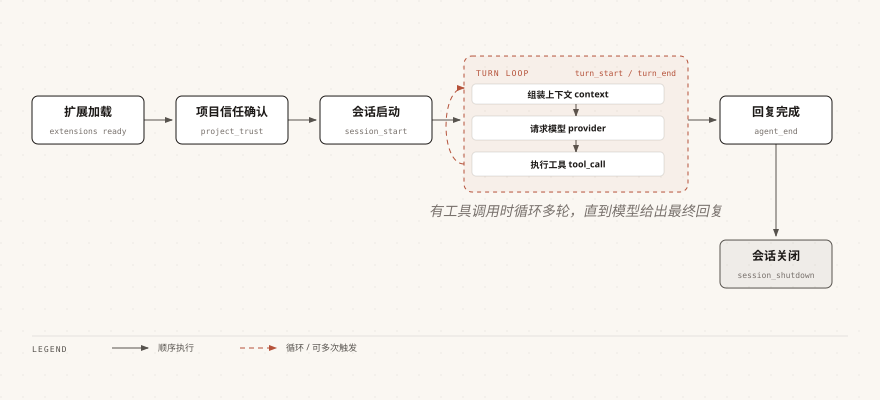

Pi Agent 事件系统
事件系统是扩展的核心机制。
通过监听生命周期事件，你可以在 AI 工作的各个阶段插入自定义逻辑。
生命周期全景
以下是 Pi Agent 从启动到退出过程中触发的所有事件：

每个 turn 内部，context、provider、tool 三类事件按序触发，有工具调用时循环多轮。
虚线部分表示该阶段可被多个事件多次触发。
input、before_agent_start、resources_discover、agent_settled 等其余事件的触发时机见下方全事件速查表。
核心事件详解
这一节挑选使用频率最高的 5 个事件，说明它们的触发时机和返回值约定。
input — 输入拦截
在用户输入被处理之前触发，可以转换、拦截或直接处理输入：
实例
// 以下片段位于扩展工厂函数体内
pi.on("input", async (event, ctx) => {
// event.text - 原始输入文本
// event.images - 附带的图片
// event.source - "interactive" | "rpc" | "extension"
// 转换输入：在输入前添加指令
if (event.text.startsWith("?quick ")) {
return {
action: "transform",
text: `简短回复：${event.text.slice(7)}`
};
}
// 直接处理：不经过 LLM 直接响应
if (event.text === "ping") {
ctx.ui.notify("pong", "info");
return { action: "handled" };
}
// 跳过扩展注入的消息
if (event.source === "extension") {
return { action: "continue" };
}
return { action: "continue" }; // 默认：正常处理
});
| action 值 | 效果 |
|---|---|
| "continue" | 不改变输入，继续正常处理流程 |
| "transform" | 修改输入后继续处理，多个 handler 的转换会链式叠加 |
| "handled" | 完全接管，跳过 LLM 调用（第一个返回此值的 handler 生效） |
两种典型写法的实际效果如下。
输入 ?quick hello world 时，实际发给 LLM 的文本已被改写：
简短回复：hello world
输入 ping 时不会调用 LLM，终端里只弹出一条通知：
pong
input 事件在 Skill 和模板展开之前触发，所以你看到的是原始输入。
/skill:foo 和 /template 此时尚未展开。
tool_call — 工具调用拦截
在工具执行之前触发，可以修改参数或阻止执行：
实例
// import 写在模块顶层，下面的 pi.on 片段位于扩展工厂函数体内
// isToolCallEventType 是类型守卫，需从官方包导入
import { isToolCallEventType } from "@earendil-works/pi-coding-agent";
pi.on("tool_call", async (event, ctx) => {
// 拦截危险 bash 命令
if (isToolCallEventType("bash", event)) {
// event.input 是 { command: string; timeout?: number }
const dangerous = ["rm -rf /", "mkfs.", "dd if=", "> /dev/sda"];
// 先判断是否危险，再决定是否放行
if (dangerous.some(cmd =>
event.input.command.includes(cmd))) {
return { block: true, reason: "危险命令已被阻止" };
}
// 判断通过后才追加环境变量加载
event.input.command = `source ~/.profile\n${event.input.command}`;
}
// 记录所有文件读取操作
if (isToolCallEventType("read", event)) {
// event.input 是 { path: string; offset?: number; limit?: number }
ctx.ui.notify(`读取文件: ${event.input.path}`, "info");
}
});
若 AI 试图执行 rm -rf /，工具不会运行，终端中会显示阻断原因：
危险命令已被阻止
event.input 是可变的——你修改它会直接影响工具执行。
tool_result — 修改工具结果
在工具执行完成后触发，可以修改返回给 LLM 的结果：
实例
// 以下片段位于扩展工厂函数体内
pi.on("tool_result", async (event, ctx) => {
// event.toolName - 工具名
// event.content - 返回给 LLM 的内容
// event.details - 详情数据
// event.isError - 是否为错误
// 例如：对 read 结果添加行号
if (event.toolName === "read" && !event.isError) {
const lines = event.content
.filter(c => c.type === "text")
.map(c => c.text)
.join("\n")
.split("\n")
.map((line, i) => `${i + 1}: ${line}`)
.join("\n");
return {
content: [{ type: "text", text: lines }],
};
}
});
原本两行的文件内容，交给 LLM 时会变成带行号的形式：
1: import { readFile } from "node:fs/promises";
2: export async function load() {
context — 修改 LLM 上下文
在每次 LLM 调用之前触发，可以过滤或修改消息：
实例
// 以下片段位于扩展工厂函数体内
pi.on("context", async (event, ctx) => {
// event.messages - 当前上下文消息的深拷贝，可安全修改
// 过滤掉特定类型的消息
const filtered = event.messages.filter(m => {
// 移除自定义类型为 "debug" 的消息
if (m.type === "custom" && m.customType === "debug") {
return false;
}
return true;
});
return { messages: filtered };
});
before_agent_start — 注入消息
在 AI 开始处理用户输入之前触发，可以注入额外消息或修改系统提示词：
实例
// 以下片段位于扩展工厂函数体内
pi.on("before_agent_start", async (event, ctx) => {
// event.prompt - 用户的提示文本
// event.systemPrompt - 当前配置的系统提示词
return {
// 注入一条持久化消息（存入会话，发送给 LLM）
message: {
customType: "my-context",
content: `当前时间是 ${new Date().toISOString()}`,
display: true,
},
// 追加到系统提示词
systemPrompt: event.systemPrompt
+ "\n\n请在所有回复中使用中文。",
};
});
全事件速查表
上一节的 ASCII 图里还出现了不少事件，这里按触发顺序集中列出，方便查阅。
| 事件 | 触发时机 | 是否可修改 | 是否可阻断 |
|---|---|---|---|
| project_trust | 加载项目资源之前，确认是否信任当前项目 | 否 | 是（拒绝则不加载项目扩展） |
| session_start | 会话启动或恢复时 | 否 | 否 |
| resources_discover | session_start 之后触发（startup/reload 时） | 是（仅可追加 Skill、提示词模板、主题路径，不能增删扩展） | 否 |
| input | 用户输入被处理之前 | 是（可转换输入） | 是（handled 接管） |
| before_agent_start | AI 开始处理用户输入之前 | 是（可注入消息、改系统提示词） | 否 |
| agent_start | agent 循环开始时 | 否 | 否 |
| message_start / message_update | 消息生成期间（message_update 为助手流式增量） | 否 | 否 |
| message_end | 用户、助手、toolResult 消息定稿时 | 是（可返回 { message } 替换最终消息，role 必须一致） | 否 |
| turn_start | 每个轮次开始时 | 否 | 否 |
| context | 每次 LLM 调用之前 | 是（可过滤消息） | 否 |
| before_provider_headers | 发送 HTTP 请求头之前 | 是（可增改请求头） | 否 |
| before_provider_request | 请求体发给模型之前 | 是（返回非 undefined 值是替换整个请求 payload，而非中止请求） | 否 |
| after_provider_response | 收到 HTTP 响应之后，流式 body 尚未消费 | 否（仅可读取 status/headers 做观测） | 否 |
| tool_execution_start | 工具开始执行时 | 否 | 否 |
| tool_call | 工具执行之前 | 是（event.input 可变） | 是（block: true） |
| tool_execution_update | 工具执行中产生进度时 | 否 | 否 |
| tool_result | 工具执行完成后 | 是（可改返回内容） | 否 |
| tool_execution_end | 工具执行结束时 | 否 | 否 |
| turn_end | 每个轮次结束时 | 否 | 否 |
| agent_end | agent 循环结束时 | 否 | 否 |
| agent_settled | 一轮交互完全平息之后 | 否 | 否 |
| session_before_switch | /new 或 /resume 执行之前 | 否 | 是（返回 { cancel: true }） |
| session_before_fork | /fork 或 /clone 执行之前 | 否 | 是（返回 { cancel: true }） |
| session_before_compact | 压缩执行之前（手动 /compact、阈值、上下文溢出） | 是（可自定义压缩摘要） | 是（返回 { cancel: true }） |
| session_shutdown | 会话销毁前触发，退出、/new、/resume、/fork、/reload 都会触发（reason 为 quit/reload/new/resume/fork） | 否 | 否 |
事件处理要点
写事件 handler 时，下面这几点决定了代码是否健壮。
| 方法 | 作用 |
|---|---|
| 多个扩展监听同一事件 | 按扩展加载顺序依次执行，前一个的返回值会影响后续 handler |
| 返回 { block: true, reason: "..." } | 阻止该操作，reason 会展示给用户和 AI |
| 返回 { cancel: true } | 取消会话切换等操作 |
| 使用 ctx.signal | 在异步操作中响应取消信号，用户按 Escape 时中止 |
| 使用 ctx.ui 系列方法 | 与用户交互，如 notify、confirm、select 等 |
| 用 ctx.hasUI 守卫对话框调用 | Print/JSON/RPC 模式下对话框类方法不可用或为空操作，先判断再调用 |
| 用 ctx.mode === "tui" 守卫 TUI 专属 API | custom()、组件工厂、终端输入等只在交互模式有效 |
在扩展工厂函数中不要启动后台资源（进程、socket、定时器等）。
将资源启动延迟到 session_start 事件中，并在 session_shutdown 中清理。

点我分享笔记